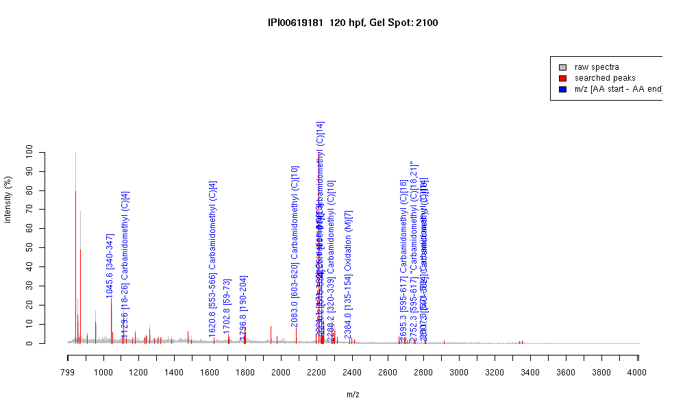

| Name | PREDICTED: similar to zinc finger protein 585B |
|---|---|
| MW | 75720.3 |
| PI | 9.06 |
| Mascot Protein Score | 87 |
| Masses (matched / unmatched) | 15 / 57 |

| Peptide | MZ (calc) | MZ (observed) | Error (DA) | Error (PPM) | Start | Stop | Modifications |
|---|---|---|---|---|---|---|---|
| QYLTDHLR | 1045.5425 | 1045.5621 | 0.0196 | 19 | 340 | 347 | |
| SFACKQNFK | 1129.5459 | 1129.5503 | 0.0044 | 4 | 18 | 26 | Carbamidomethyl (C)[4] |
| SFTCNLCGKSFTQK | 1620.7509 | 1620.8051 | 0.0542 | 33 | 553 | 566 | Carbamidomethyl (C)[4] |
| IHTGEKPYTCHECGK | 1702.7676 | 1702.8348 | 0.0672 | 39 | 59 | 73 | |
| EESEDIKIEETFTVK | 1796.88 | 1796.8152 | -0.0648 | -36 | 190 | 204 | |
| VHSGEKPFTCDQCGKSFR | 2082.9482 | 2083.0078 | 0.0596 | 29 | 603 | 620 | Carbamidomethyl (C)[10] |
| VHTGEKPFTLNIMKMAFIK | 2221.1873 | 2221.1226 | -0.0647 | -29 | 171 | 189 | Oxidation (M)[13] |
| EHIKVHTGETPYTCHQCGK | 2225.0227 | 2225.1167 | 0.094 | 42 | 83 | 101 | Carbamidomethyl (C)[14] |
| VHTGEKPHICPQCGKSFTQK | 2225.0955 | 2225.1167 | 0.0212 | 10 | 115 | 134 | |
| SHMIIHSGEKPYACQICGKK | 2230.093 | 2230.1758 | 0.0828 | 37 | 515 | 534 | |
| IHTGEKPHTCTQCGKSFTQK | 2288.0911 | 2288.1616 | 0.0705 | 31 | 320 | 339 | Carbamidomethyl (C)[10] |
| QTLTEHMSTHTGEQRFPCHK | 2384.0872 | 2384.0107 | -0.0765 | -32 | 135 | 154 | Oxidation (M)[7] |
| VHLEQHMKVHSGEKPFTCDQCGK | 2695.2537 | 2695.2524 | -0.0013 | 0 | 595 | 617 | Carbamidomethyl (C)[18] |
| VHLEQHMKVHSGEKPFTCDQCGK | 2752.2751 | 2752.2917 | 0.0166 | 6 | 595 | 617 | "Carbamidomethyl (C)[18,21]" |
| SHLIIHSGEKPYSCQQCQSTFTQK | 2807.324 | 2807.2915 | -0.0325 | -12 | 571 | 594 | Carbamidomethyl (C)[14] |
| QYLTDHLRIHTGEKPYTCQYCGK | 2811.334 | 2811.2944 | -0.0396 | -14 | 340 | 362 | Carbamidomethyl (C)[18] |